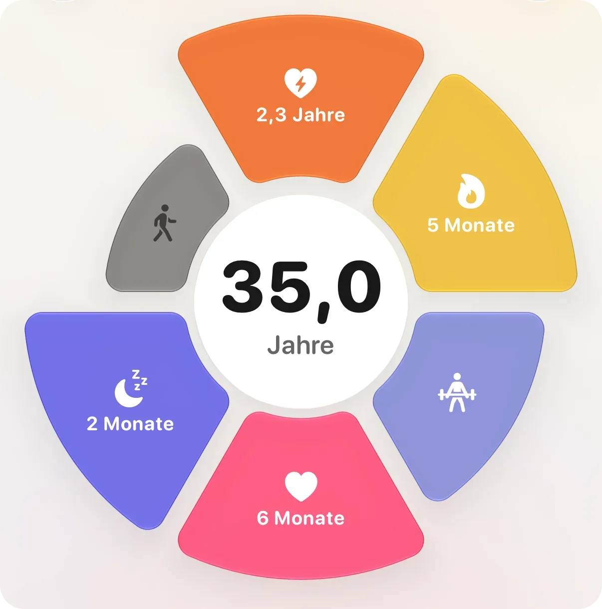
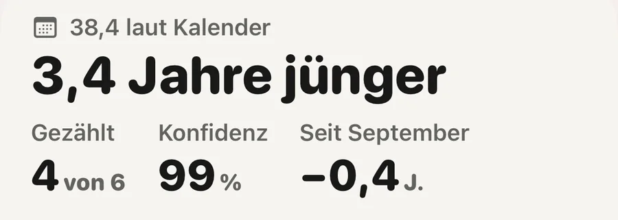

Grundlagen · Langlebigkeit

Ein biologisches Alter von der Uhr ist eine Schätzung, keine Messung. Es vergleicht ein paar Signale, die deine Uhr ohnehin aufzeichnet, vor allem Ausdauerfitness, tägliche Bewegung, Ruhepuls und Schlaf, mit Menschen deines Alters und Geschlechts und schreibt das Ergebnis in Jahren. Dahinter steht kein Bluttest und keine Genanalyse. Lies es als Richtung über Wochen, nicht als Urteil über einen Tag.
Nein. In der Forschung meint biologisches Alter meist eines von zwei Dingen: eine Uhr aus chemischen Markierungen an der DNA (Horvath, 2013) oder einen Wert aus Blutwerten wie Albumin, Glukose und Entzündungsmarkern (Levine und Kollegen, 2018). Für beides braucht es eine Blut- oder Gewebeprobe. Eine Uhr hat keines von beiden.
Eine Uhr hat Signale, die große Studien damit verknüpft haben, wie lange und wie gesund Menschen leben: wie fit Herz und Lunge sind, wie viel du dich bewegst, wie schnell dein Herz in Ruhe schlägt, wie du schläfst. Ein Uhren-Alter hält jedes davon gegen veröffentlichte Werte für Menschen deines Alters und Geschlechts und rechnet den Abstand in Jahre um. Sehen deine Signale aus wie die eines typischen Menschen, der fünf Jahre jünger ist, steht dort fünf Jahre jünger.
Es ist also ein Vergleich, in Jahren geschrieben. Nützlich kann er sein, weil er aus Dingen besteht, die du ändern kannst. Ein klinischer Alterungstest ist er nicht, und so solltest du ihn nie lesen. Die Idee dahinter erklärt die Notiz Was ist das biologische Alter? (auf Englisch).
Jeder Hersteller wählt selbst. Hinter diesen steht die stärkste Evidenz:
Was Aeras Körperalter liest und wie viel jedes zählt
Das sind Zusammenhänge aus Gruppen. Sie zeigen, wie es vielen Menschen im Schnitt ergeht, nicht, was mit dir geschieht.
Weil jeder Hersteller seine Zahl auf eigene Weise baut. Nach eigenen Angaben liest Garmins Fitnessalter auf neueren Uhren die Intensität der Aktivität, den Ruhepuls und den BMI oder Körperfettanteil. WHOOP Age rechnet neun Eingaben zusammen, von der Schlafkonstanz und den Schritten bis zur VO2max und zur fettfreien Körpermasse. Ouras kardiovaskuläres Alter liest aus der Form der Pulswelle, wie steif deine Arterien sind. Die Eingaben unterscheiden sich, die Vergleichsgruppen auch und ebenso die Grenzen, die jeder Hersteller setzt.
Selbst eine gemeinsame Eingabe ist nicht dieselbe Zahl. Jede Uhr schätzt die VO2max auf ihre Weise. In einer Validierungsstudie mit 28 Erwachsenen lag die Apple Watch im Schnitt 6,1 ml/kg/min unter dem Laufbandtest mit Maske (Lambe und Kollegen, 2025). Ein Abstand dieser Größe ist in jedem dieser Alter Jahre wert.
Zwei Alter, die ein paar Jahre auseinanderliegen, können also beide fair sein. Wähle eines und beobachte, wohin es sich bewegt. Der Vergleich zwischen Marken sagt etwas über die Marken.
Apple hat im September 2026 eine eigene Version angekündigt. Health Age steht in einem neuen Tab „Longevity“ der überarbeiteten Health-App und zeigt, wie deine Werte im Verhältnis zu deinem Kalenderalter liegen. Als Eingaben nennt Apple VO2max, Ruhepuls, Schlaf und HRV von der Apple Watch, und du kannst Laborwerte wie HbA1c und LDL-Cholesterin ergänzen.
Es setzt eine Apple Watch voraus, und die überarbeitete Health-App läuft auf iPhones, die Apple Intelligence unterstützen. Laut Apple kommt sie Ende 2026 als kostenloses Update, zuerst in US-Englisch, weitere Sprachen sollen folgen. Ein Datum für Deutsch hat Apple nicht genannt. Im November 2026 war die Funktion noch in der Beta, Details können sich ändern.
Alles auf dieser Seite gilt auch dafür. Es ist ein Vergleich in Jahren, gebaut aus den Schätzungen der Uhr, und am besten liest du ihn als Trend.
Eine Zahl, die nach einem Lauf um ein Jahr fällt, würde dir schmeicheln. Was sie liest, ändert sich über Wochen. Fitness wächst über einen Trainingsblock, der Ruhepuls sinkt mit ihr, und eine Schlafgewohnheit zeigt sich erst über viele Nächte.
Einzelne Tage sind vor allem Rauschen. Bei 92.457 Erwachsenen schwankte der Ruhepuls einer Person von einem Tag zum nächsten um etwa 3 Schläge pro Minute (Quer und Kollegen, 2020), aus so alltäglichen Gründen wie einem späten Abendessen, einem warmen Schlafzimmer oder einem Glas Wein. Ein ehrliches Alter muss darüber hinwegsehen.
Die Zahl des Tages zählt weniger als die Richtung, in die sie sich über einen Monat neigt.
Mehr dazu in der Notiz Warum bewegt sich das biologische Alter langsam? (auf Englisch).
Ruhepuls und HRV folgen den anderen. Direkt trainierst du sie nicht. Eine harte Einheit, eine perfekte Nacht oder ein Nahrungsergänzungsmittel bewegt ein ehrliches Alter nicht.

Körperalter neben deinem KalenderalterDie Ansicht zeigt, wie weit dein Körperalter von deinem Kalenderalter entfernt liegt, wie viele Bereiche zählen und wie sicher sich Aera ist. Fitness, Herz, Bewegung und Schlaf zählen. Kraft und Gehtempo stehen auf der Blume, fließen aber nicht ins Alter ein.
Aera, für iPhone und Apple Watch
Aera berechnet ein Körperalter auf deinem iPhone aus dem, was in Apple Health schon vorliegt: Ausdauerfitness, aktive Minuten, Schritte, Ruheherzfrequenz, HRV, Schlafdauer und Schlafregelmäßigkeit. Jedes wird an veröffentlichten Werten für dein Alter und Geschlecht gemessen, und der Bildschirm zeigt, wie viele Monate oder Jahre jeder Bereich hinzufügt oder abzieht. So siehst du, woher die Zahl kommt.
Jeden Montag liest Aera deine letzten Wochen neu. Hat sich der Wert eingependelt, bewegt ihn eine volle oder ruhige Woche um höchstens zwei bis drei Monate. Er liegt nie mehr als neun Jahre von deinem Kalenderalter entfernt, neigt sich bei wenigen Daten zu deinem Kalenderalter und sagt, wie sicher er ist. Mit einer Manschette, die in Apple Health speichert, oder einem gemessenen Taillenumfang kannst du Blutdruck und Taille zu Größe ergänzen. Beide werden am Idealwert gemessen und fügen deshalb öfter Jahre hinzu, als sie abziehen.
Der Field Guide in der App erklärt jedes Signal und nennt seine Quellen. Es gibt kein Konto. Das heutige Körperalter und seine letzten 30 Tage sind kostenlos, ältere Monate gehören zu Premium. Am besten funktioniert es mit einer Apple Watch, die VO2max und Herzfrequenz aufzeichnet. Die ganze App ist auf Deutsch.
Das Körperalter ist eine Schätzung für das Wohlbefinden im Alltag, kein medizinisches Alter. Aera ist kein Medizinprodukt.
Nein. Eine Uhr schätzt es, indem sie Signale wie Ausdauerfitness, Bewegung, Ruhepuls und Schlaf mit Menschen deines Alters und Geschlechts vergleicht. Labormessungen des biologischen Alters arbeiten mit Blut oder DNA. Ein Uhren-Alter ist als Richtung über Wochen nützlich, nicht als klinisches Ergebnis.
Health Age ist Apples eigene Schätzung im Tab „Longevity“ der überarbeiteten Health-App, angekündigt im September 2026. Laut Apple zeigt sie anhand von Apple-Watch-Daten wie VO2max, Ruhepuls, Schlaf und HRV, wie deine Werte im Verhältnis zu deinem Kalenderalter liegen. Sie setzt eine Apple Watch voraus und startet in US-Englisch.
Jeder Hersteller nutzt eigene Eingaben, eine eigene Vergleichsgruppe und eigene Grenzen, und jede Uhr schätzt die VO2max auf ihre Weise. Zwei Alter, die ein paar Jahre auseinanderliegen, können beide fair sein. Verfolge eine Zahl über die Zeit und vergleiche nicht zwischen Marken.
Baue über Wochen Ausdauerfitness auf, bewege dich jeden Tag, halte feste Schlaf- und Aufstehzeiten und schlafe genug. Der größte Teil des Gewinns durch Schritte ist bei etwa 7.000 am Tag erreicht. Ein Training oder eine gute Nacht bewegt ein ehrliches Alter nicht.
Verwandte Notizen (auf Englisch): was das biologische Alter ist · warum es sich langsam bewegt · was eine Consumer-Uhr nicht messen kann
Verwandte Ratgeber: VO2max auf der Apple Watch: Wie genau ist sie? · Welcher Ruhepuls ist normal? · Ein Blutdruck-Tagebuch für den Arztbesuch